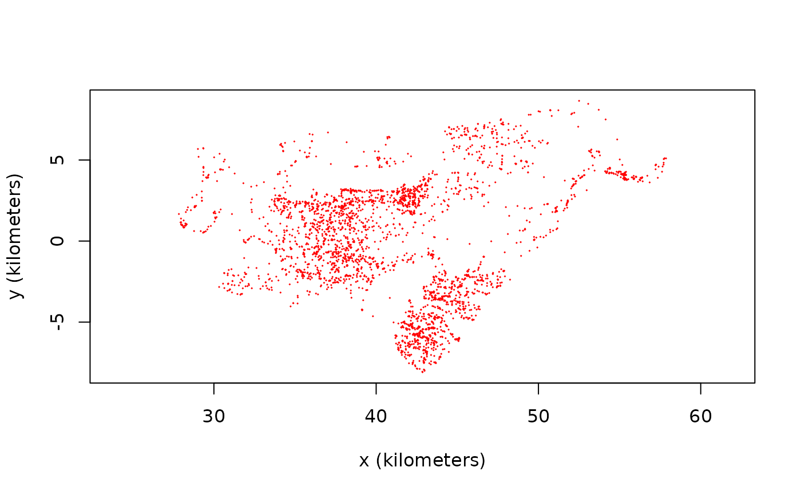

buffalo.RdGPS data on six African buffalo. When using this dataset, please cite the original article by Getz et al (2007) and the Movebank data package (Cross et al, 2016).
data("buffalo")
A list of 6 telemetry objects.
W. M. Getz, S. Fortmann-Roe, P. C. Cross, A. J. Lyons, S. J. Ryan, C. C. Wilmers. LoCoH: Nonparameteric kernel methods for constructing home ranges and utilization distributions. PLoS ONE 2:2, e207 (2007).
P. C. Cross, J. A. Bowers, C. T. Hay, J. Wolhuter, P. Buss, M. Hofmeyr, J. T. du Toit, W. M. Getz. Data from: Nonparameteric kernel methods for constructing home ranges and utilization distributions. Movebank Data Repository. DOI:10.5441/001/1.j900f88t (2016).
In ctmm v0.3.2 the erroneous location fix 606 was removed from buffalo[[4]] "Pepper".
# Load package and data library(ctmm) data("buffalo") # Extract movement data for a single animal Cilla <- buffalo$Cilla # Plot all sampled locations plot(Cilla)#>